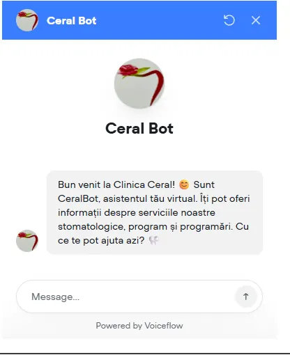
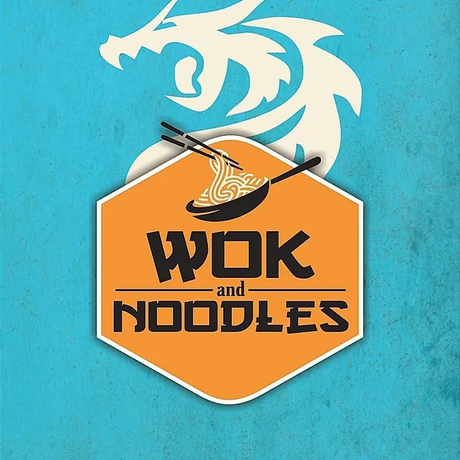
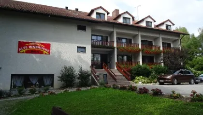

Chatbot AIClinică stomatologică · Galați
Clinica Ceral — CeralBot
Asistent virtual pe site-ul clinicii: răspunde pacienților despre servicii, program și programări, la orice oră.
Un asistent virtual care știe tot despre afacerea ta: servicii, prețuri, program, adresă. Răspunde instant pe site, inclusiv noaptea și în weekend, și îți trimite cererile gata calificate.
Majoritatea mesajelor primite de o afacere locală se repetă: „Ce program aveți?”, „Cât costă?”, „Aveți loc mâine?”. Un chatbot AI preia aceste întrebări și răspunde corect, pe baza informațiilor despre afacerea ta, fără să mai stai tu cu telefonul în mână.
Pentru Clinica Ceral am construit CeralBot, un asistent virtual integrat pe site-ul clinicii. Pacienții află pe loc ce servicii stomatologice sunt disponibile, programul și cum se pot programa. Poți vedea testimonialul video al clinicii.
Un chatbot are sens dacă primești multe întrebări repetitive sau cereri în afara programului: clinici și cabinete, restaurante, saloane, săli de sport, hoteluri și pensiuni, firme de servicii. Dacă primești două mesaje pe săptămână, nu ai nevoie de el și îți spun asta direct la apel.
Strângem întrebările pe care le primești cel mai des și informațiile corecte despre afacere.
Configurez chatbotul pe datele tale, cu tonul și regulile pe care le vrei.
Îl pun pe site și îl testăm împreună pe conversații reale.
Urmărim primele conversații și corectez răspunsurile unde e nevoie.

Chatbot AIAsistent virtual pe site-ul clinicii: răspunde pacienților despre servicii, program și programări, la orice oră.

Site webSite pentru un restaurant asiatic din Galați: meniu, recenzii de la clienți și articole de blog pentru căutările locale.

Site multilingvSite în germană, engleză și română pentru un hotel cu 37 de camere, cu rezervare directă pe WhatsApp.
Un asistent virtual care răspunde automat la mesajele clienților, folosind informațiile despre afacerea ta. Spre deosebire de un robot cu butoane, înțelege întrebări scrise liber.
Pe site-ul tău, inclusiv pe site-uri făcute în Wix sau WordPress. În funcție de proiect se poate conecta și la alte canale de mesagerie.
Îl configurez să răspundă doar pe baza informațiilor tale și să trimită clientul la un om când nu știe. Primele conversații le verificăm împreună.
Un chatbot pentru întrebări frecvente și preluare de cereri e gata de obicei în câteva zile, după ce primesc informațiile despre afacere.
Depinde de cât de multe știe și de unde trebuie să trimită datele. Primești prețul exact după un apel gratuit de 30 de minute.
Strategie, site, reclame și SEO dintr-un singur loc, pentru afaceri locale.
Site-uri de prezentare rapide, făcute de la zero, construite să apară pe Google.
Campanii pe căutări, ca să apari când oamenii caută exact ce vinzi.
Campanii Meta Ads pentru vizibilitate locală, mesaje și cereri.
Un apel gratuit de 30 de minute. Îmi spui cum lucrezi acum, îți spun concret ce aș construi și decizi tu dacă merită.